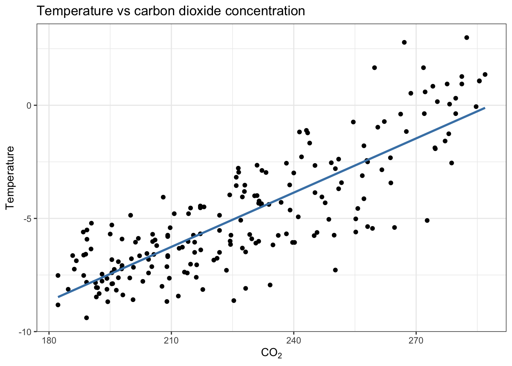
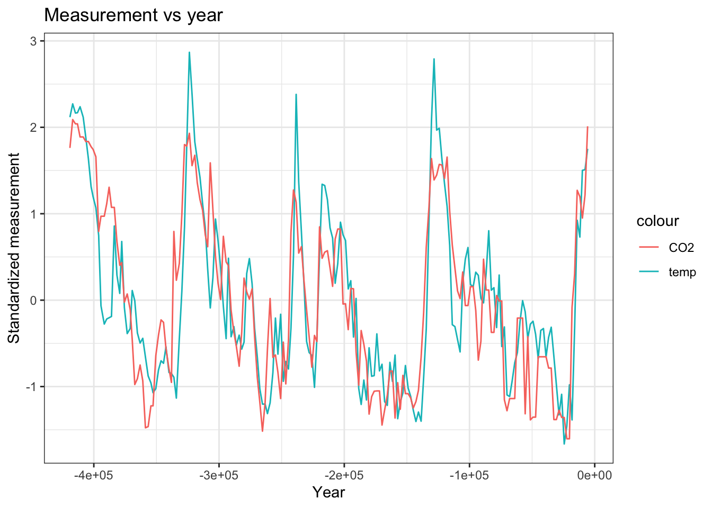
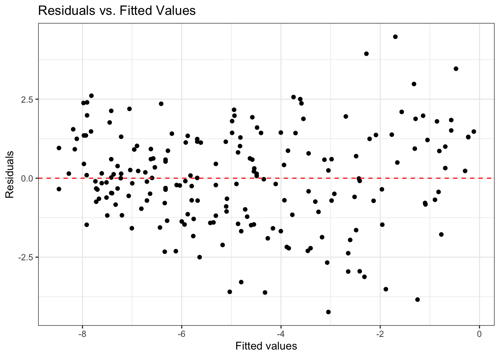
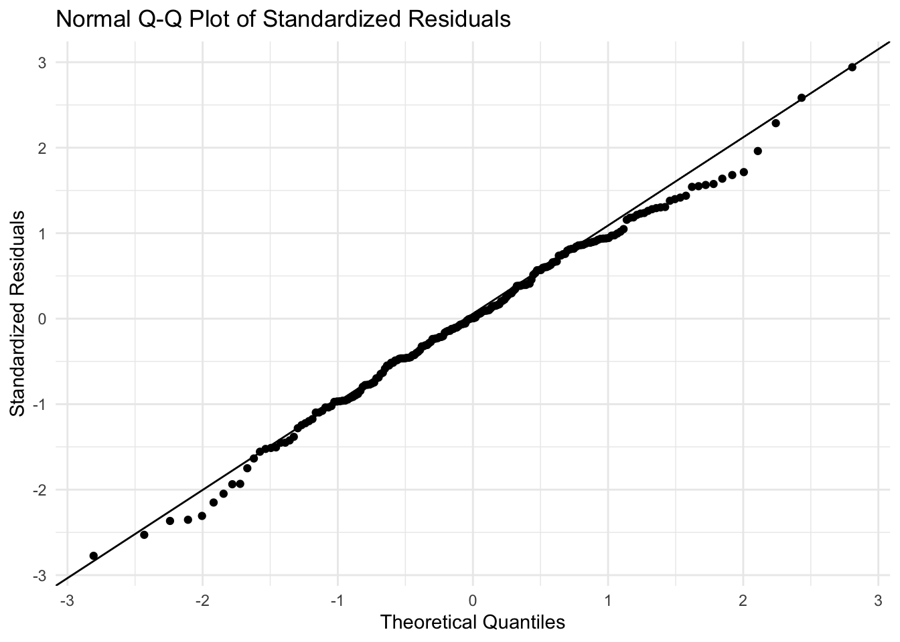
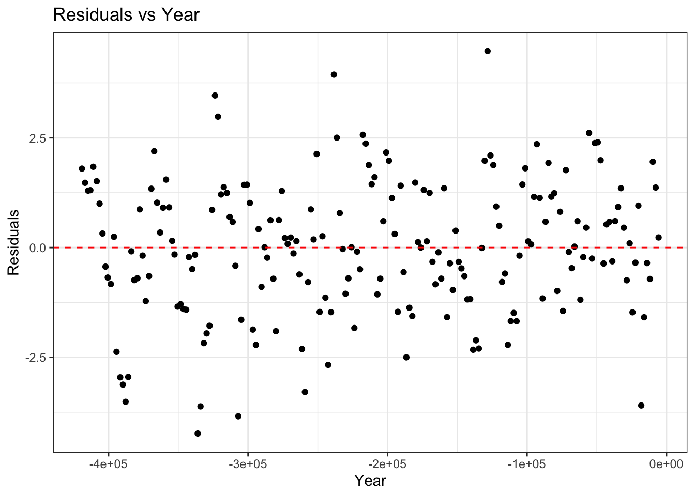

View libraries and data used in these notes
library(tidyverse)
library(tidymodels)
library(nlme) # package for GLS, AR1 model
library(mvtnorm) # for density of a multivariate normal
load(url("https://sta221-fa25.github.io/data/VostokIce"))Dr. Alexander Fisher
Vostok station is a Russian research station founded by the Soviet Union in 1957. The station is near the South Pole in Antarctica and has recorded the lowest reliably measured natural temperature on Earth (-89.2 C or -128.6 F). The station sits on an ice sheet. The ice-core project had researchers drill over 3500 meters in below the surface of the ice sheet to retrieve “ice cores”. The ice cores provide us with a few pieces of data.
year: scientists estimate “years before present” at which ice was frozen by counting layers of ice (by assuming some constants, such as regularity of snow, etc.)
co2: atmospheric \(CO_2\) concentration (ppm), preserved in the ice within trapped air bubbles.
tmp: a measure of past temperature, recorded as a difference from current and constructed from based on the isotopes of \(CO_2\) found. The key idea being that colder temperatures result in fewer heavy isotopes during snowfall.
Rows: 200
Columns: 3
$ year <dbl> -419095, -416872, -414692, -413062, -410979, -408485, -406441, -4…
$ co2 <dbl> 277.6, 286.9, 285.5, 285.5, 281.2, 281.2, 279.7, 279.7, 278.0, 27…
$ tmp <dbl> 0.94, 1.36, 1.07, 1.08, 1.27, 0.94, 0.31, -0.37, -1.26, -1.58, -1…Can temperature be explained by \(CO_2\) concentration in the atmosphere?


VostokIce %>%
mutate(tmpStd = ((tmp - mean(tmp)) / sd(tmp))) %>%
mutate(co2Std = (co2 - mean(co2)) / sd(co2)) %>%
ggplot(aes(x = year, y = tmpStd)) +
theme_bw() +
geom_line(aes(col = "temp")) +
geom_line(aes(x = year, y = co2Std, col = "CO2"),) +
labs(x = "Year", y = "Standardized measurement", title = "Measurement vs year")fit_aug = augment(fit)
ggplot(data = fit_aug, aes(x = .fitted, y = .resid)) +
geom_point() +
geom_hline(yintercept = 0, linetype = 2, color = "red") +
labs(x = "Fitted values",
y = "Residuals",
title = "Residuals vs. Fitted Values") +
theme_bw()
ggplot(fit_aug, aes(sample = .std.resid)) +
stat_qq() +
stat_qq_line() +
labs(title = "Normal Q-Q Plot of Standardized Residuals",
x = "Theoretical Quantiles",
y = "Standardized Residuals") +
theme_minimal()
A Q–Q (quantile–quantile) plot compares the quantiles of your residuals to those of a theoretical distribution (in this case a normal). If the points fall roughly along a straight line, the residuals follows a normal distribution closely.

res_t1 = fit$res[-1] # residuals minus the first.
res_t0 = fit$res[-length(fit$res)] # residuals minus the last
resid_matrix = cbind(res_t0 , res_t1 ) # combine the two
resid_matrix[1:4,] res_t0 res_t1
1 1.796974 1.474342
2 1.474342 1.296136
3 1.296136 1.306136
4 1.306136 1.839503 res_t0 res_t1
res_t0 1.0000000 0.5183877
res_t1 0.5183877 1.0000000nlme packageBefore fitting with an AR1 model, we sort the data frame by year.
# Step (1): sort by time
# This matters since we don't explicitly give the "year
# variable" a place in the AR1 model below
VostokIce = VostokIce %>%
arrange(year)
# Auto-regressive lag-1 model:
fit_gls_ar1 = gls(
tmp ~ co2,
data = VostokIce,
correlation = corAR1(form = ~ 1)
)
summary(fit_gls_ar1)Generalized least squares fit by REML
Model: tmp ~ co2
Data: VostokIce
AIC BIC logLik
664.8527 678.0058 -328.4264
Correlation Structure: AR(1)
Formula: ~1
Parameter estimate(s):
Phi
0.8470009
Coefficients:
Value Std.Error t-value p-value
(Intercept) -10.355955 1.7231321 -6.009960 0e+00
co2 0.025119 0.0070807 3.547493 5e-04
Correlation:
(Intr)
co2 -0.947
Standardized residuals:
Min Q1 Med Q3 Max
-1.7007966 -0.7472771 -0.3278727 0.4786885 2.7789435
Residual standard error: 2.312641
Degrees of freedom: 200 total; 198 residualn = nrow(VostokIce)
rho = 0.8470009 # from gls output above
Sigma = rho ^ abs(outer(1:n, 1:n, "-")) # construct Sigma
X = model.matrix(~ co2, data = VostokIce)
y = VostokIce$tmp
beta_hat = solve(t(X) %*% solve(Sigma) %*% X) %*% t(X) %*% solve(Sigma) %*% y
beta_hat [,1]
(Intercept) -10.3559555
co2 0.0251189[1] 664.8527[1] 664.8527